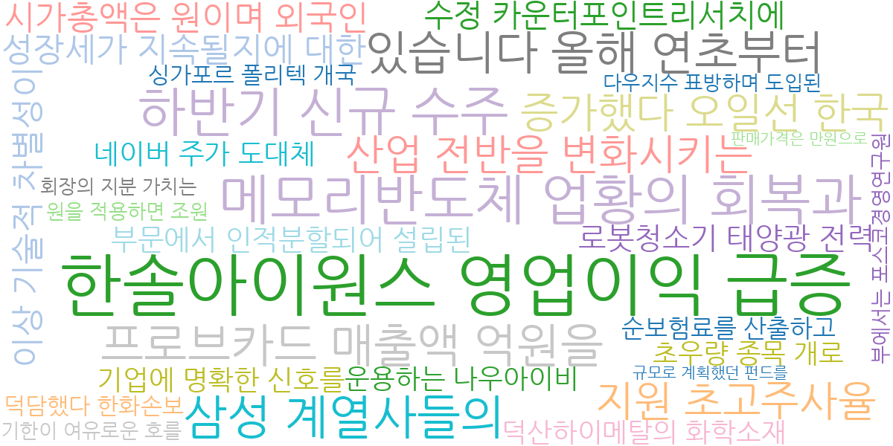
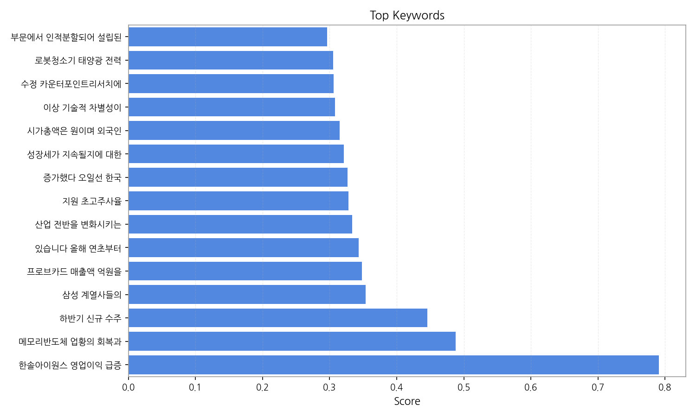
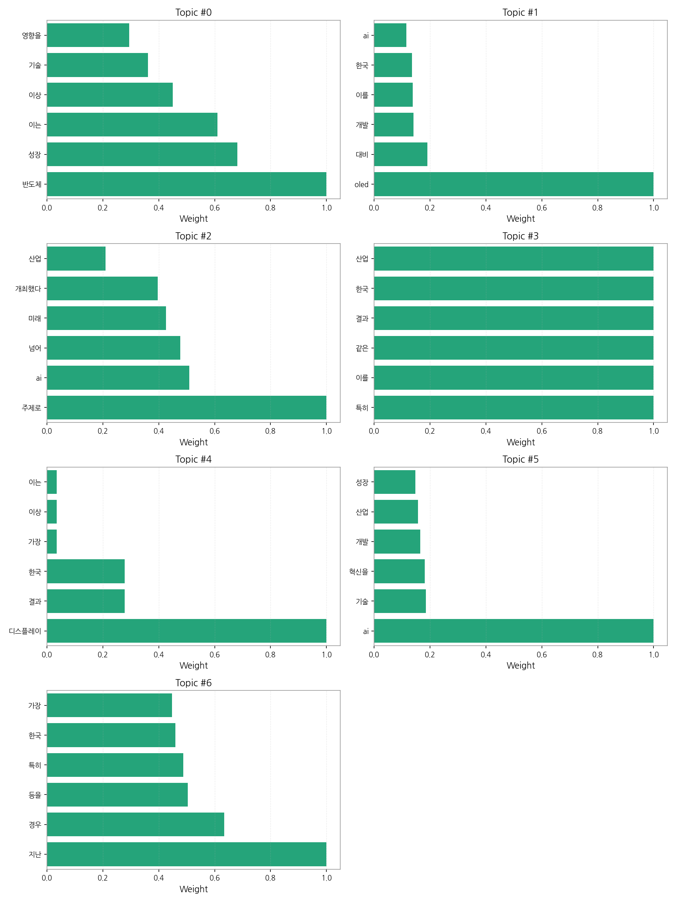
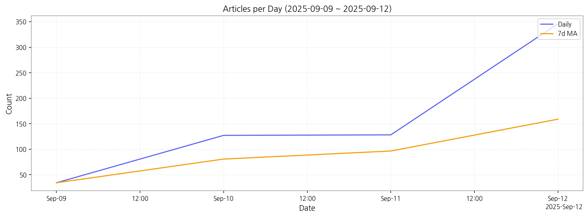

1) 상위 토픽을 3개 주제로 묶어 핵심 맥락을 설명하면 다음과 같습니다. 첫째, 반도체 및 디스플레이 산업의 성장과 기술 경쟁에 대한 뉴스가 다수를 차지합니다. 반도체의 성장세와 OLED 기술 개발, 디스플레이 산업의 미래에 대한 논의가 주를 이루며, 한국 산업의 경쟁력 확보를 위한 노력이 집중적으로 보도되고 있습니다. 둘째, AI 기술의 발전과 산업적 활용에 대한 기사들이 많은 비중을 차지합니다. AI 기술의 혁신과 미래 전망, 산업 전반에 걸친 AI 기술 적용 및 개발 현황 등이 주요 내용입니다. 셋째, 산업 전반의 미래 전망 및 혁신에 대한 뉴스들이 다뤄지고 있습니다. AI, 반도체, 디스플레이 등 핵심 기술의 발전과 이를 통한 산업 혁신, 미래 성장 전략 등에 대한 분석과 전망이 주요 내용입니다.
2) 최근 변화/스파이크를 짚어보면, 9월 9일 34건이었던 기사 수가 9월 10일부터 급증하여 9월 12일에는 346건까지 도달했습니다. 이는 특정 이벤트나 뉴스 발표로 인한 집중적인 보도의 결과로 추정됩니다.
3) 실무 인사이트 3가지:

| Rank | Keyword | Score |
|---|---|---|
| 1 | 한솔아이원스 영업이익 급증 | 0.791 |
| 2 | 메모리반도체 업황의 회복과 | 0.488 |
| 3 | 하반기 신규 수주 | 0.446 |
| 4 | 삼성 계열사들의 | 0.354 |
| 5 | 프로브카드 매출액 억원을 | 0.348 |
| 6 | 있습니다 올해 연초부터 | 0.343 |
| 7 | 산업 전반을 변화시키는 | 0.333 |
| 8 | 지원 초고주사율 | 0.328 |
| 9 | 증가했다 오일선 한국 | 0.327 |
| 10 | 성장세가 지속될지에 대한 | 0.321 |
| 11 | 시가총액은 원이며 외국인 | 0.315 |
| 12 | 이상 기술적 차별성이 | 0.308 |
| 13 | 수정 카운터포인트리서치에 | 0.306 |
| 14 | 로봇청소기 태양광 전력 | 0.305 |
| 15 | 부문에서 인적분할되어 설립된 | 0.296 |



1) 상위 토픽을 3개 주제로 묶어 핵심 맥락을 설명하면 다음과 같습니다. 첫째, 반도체 및 디스플레이 산업의 성장과 기술 경쟁에 대한 뉴스가 다수를 차지합니다. 반도체의 성장세와 OLED 기술 개발, 디스플레이 산업의 미래에 대한 논의가 주를 이루며, 한국 산업의 경쟁력 확보를 위한 노력이 집중적으로 보도되고 있습니다. 둘째, AI 기술의 발전과 산업적 활용에 대한 기사들이 많은 비중을 차지합니다. AI 기술의 혁신과 미래 전망, 산업 전반에 걸친 AI 기술 적용 및 개발 현황 등이 주요 내용입니다. 셋째, 산업 전반의 미래 전망 및 혁신에 대한 뉴스들이 다뤄지고 있습니다. AI, 반도체, 디스플레이 등 핵심 기술의 발전과 이를 통한 산업 혁신, 미래 성장 전략 등에 대한 분석과 전망이 주요 내용입니다.
2) 최근 변화/스파이크를 짚어보면, 9월 9일 34건이었던 기사 수가 9월 10일부터 급증하여 9월 12일에는 346건까지 도달했습니다. 이는 특정 이벤트나 뉴스 발표로 인한 집중적인 보도의 결과로 추정됩니다.
3) 실무 인사이트 3가지:
| Idea | Target | Value Prop | Score |
|---|---|---|---|
| AI 기반 디스플레이 품질 검사 플랫폼 (KR) | 한국 내 대기업 디스플레이 제조사 (삼성디스플레이, LG디스플레이 등) 및 중견·중소기업 협력사 | AI 기반 자동화 시스템으로 불량률 감소 및 생산성 향상. 고해상도 이미지 분석 및 머신러닝 알고리즘을 통해 정확도 향상. 차별화 포인트: 실시간 데이터 분석 및 예측 기능을 통해 예방적 품질 관리 제공. | 4.50 |
| AI 기반 전자부품 수요 예측 서비스 (KR) | 한국 내 전자 부품 제조사 및 유통업체 | AI 기반 머신러닝 알고리즘을 활용한 정확한 수요 예측. 재고 관리 최적화 및 원활한 수급 관리 지원. 차별화 포인트: 다양한 데이터 소스 통합 및 실시간 예측 기능 제공. | 4.20 |
| 디스플레이 부품 조달 플랫폼 (JP) | 일본 내 디스플레이 제조사 및 중소 부품 공급업체 | 온라인 플랫폼을 통한 효율적인 부품 조달 및 가격 투명성 확보. 다양한 공급업체의 부품 정보 제공 및 가격 비교 기능. 차별화 포인트: 블록체인 기반 거래 시스템을 통해 투명하고 안전한 거래 환경 제공. | 4.00 |
| 모빌리티용 디스플레이 AI 분석 서비스 (EU) | EU 지역 자동차 제조사 및 모빌리티 관련 기술 기업 | AI 기반 디스플레이 성능 분석 및 예측 서비스. 실시간 데이터 분석을 통한 문제점 진단 및 예방적 관리. 차별화 포인트: 자율주행 환경에 특화된 디스플레이 성능 평가 지표 제공. | 3.80 |
| 디스플레이 산업 전문가 매칭 플랫폼 (JP) | 일본 내 디스플레이 제조사 및 관련 기업, 디스플레이 분야 전문가 | 온라인 플랫폼을 통한 디스플레이 산업 전문가 매칭 서비스. 기업의 채용 및 인력 확보 지원. 전문가의 경력 관리 및 새로운 기회 제공. 차별화 포인트: 프로젝트 기반의 단기/장기 계약 지원. | 3.50 |